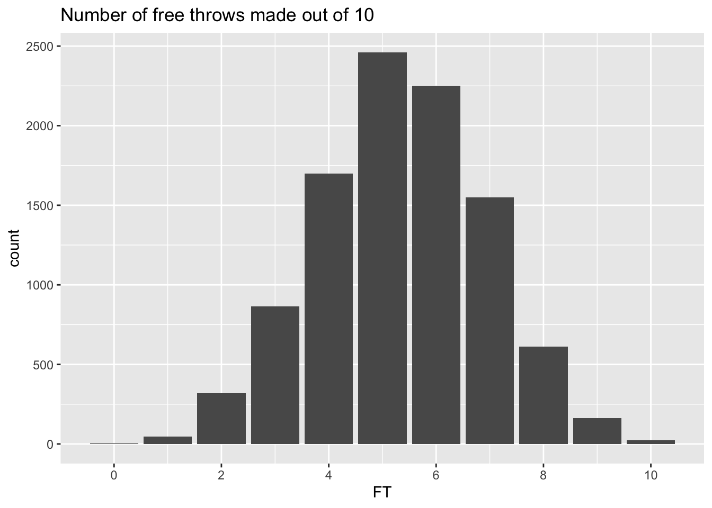
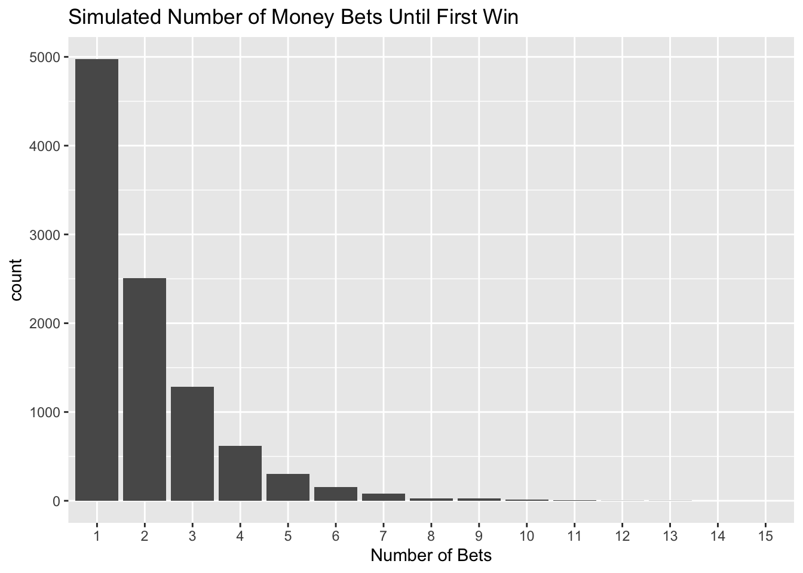
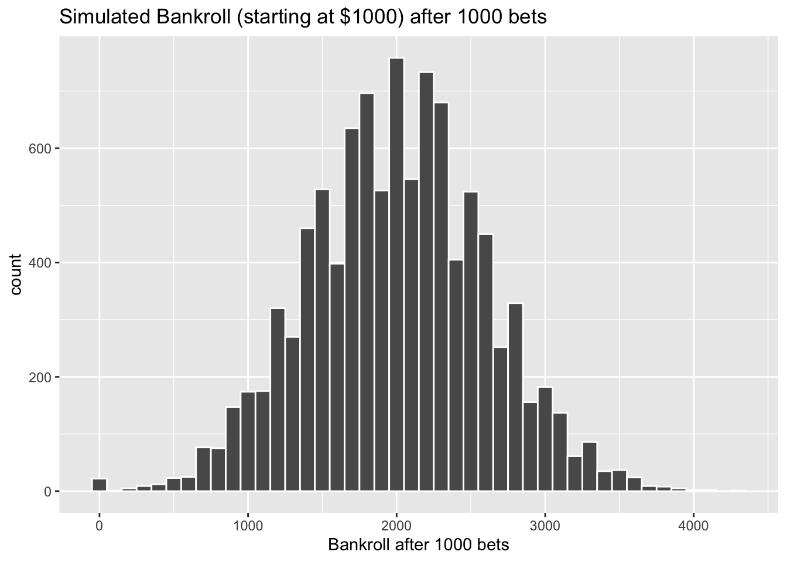
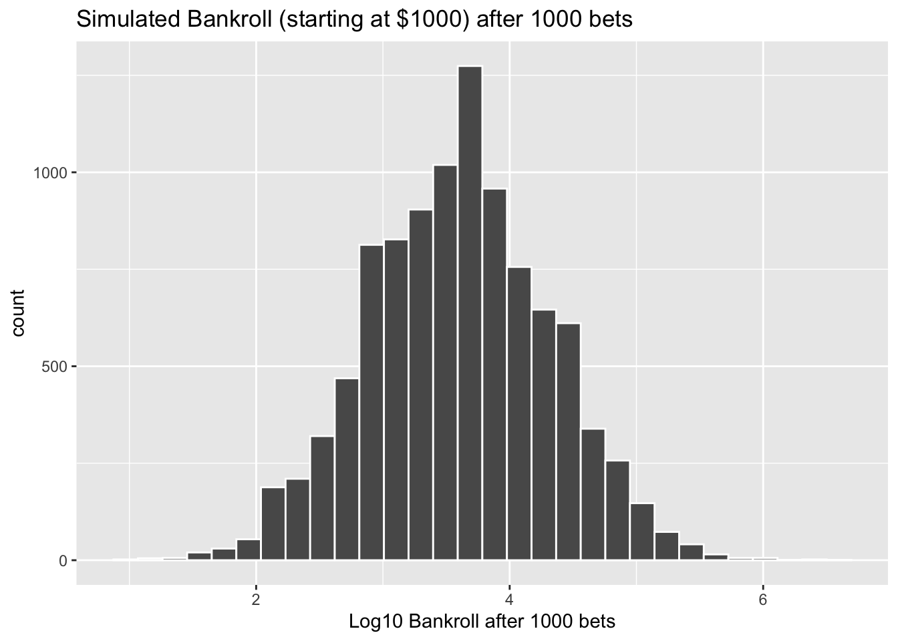

Chapter 4 Monte Carlo Simulation
4.1 Basics
Monte Carlo Simulation is a collection of computer-driven, computational algorithms that use repeated random sampling to calculate estimates. The basic steps for such a simulation are as follows:
Set seed for replicability
Initialize all variables/vectors
Loop through “n” simulations and save simulated values
Analyze the simulated values from the “n” simulations
One function that will be particularly useful for simulation is set.seed().
set.seed() allows us to replicate any simulation by giving the initial seed for the simulation. The actual number that is “seeded” is not particularly important though if you want to replicate the same simulations, you will want to re-use this number.
Example 4.1 Simulate 10 overtime coin tosses with and without using set.seed() and compare the results
## [1] "H" "T" "H" "H" "H" "T" "T" "T" "H" "T"## [1] "T" "T" "T" "H" "H" "T" "T" "T" "H" "H"## [1] "H" "T" "H" "T" "T" "T" "T" "T" "T" "H"## [1] "H" "T" "H" "T" "T" "T" "T" "T" "T" "H"Simulation can be very helpful when you want to estimate quantities that are not easily solved using analytical methods like formulas.
Example 4.2 Shaquille O’Neal has a career free throw percentage of 52.7%. Suppose that Shaq takes 10 free throw shots. What is the probability that he makes all 10 shots?
In this case, we can calculate the exact probability of interest using binomial random variable.
## [1] 0.001652366In more complicated simulations, there may not be an easy formula to use to calculate the value of interest. In these situations, simulation can be very helpful in estimating quantities.
set.seed(2020)
# Number of Simulations
n.sims <- 10000
# Initialize FT variable with 10000 zeros
FT <- rep(0,n.sims)
for(i in 1:n.sims){
# Simulate 10 free throws
temp <- sample(x=c(0,1), size = 10, replace = T, prob = c(0.473,0.527) )
# Count the number of free throws made and store them in FT
FT[i] <- sum(temp)
}
prob10 <- sum(FT == 10)/n.sims; prob10## [1] 0.0023## [1] 0.0023The estimated probability that Shaq goes 10-for-10 in free throw attempts based on his career average is 0.0023.
FT %>%
as.data.frame() %>%
ggplot(aes(x=FT)) +
geom_bar() +
ggtitle("Number of free throws made out of 10") +
scale_x_continuous(breaks = seq(0, 10, by = 2))
If we run the simulation again with a different seed, we will get another estimate (0.0019).
set.seed(1)
# Number of Simulations
n.sims <- 10000
# Initialize FT variable with 10000 zeros
FT <- rep(0,n.sims)
for(i in 1:n.sims){
# Simulate 10 free throws
temp <- sample(x=c(0,1), size = 10, replace = T, prob = c(0.473,0.527) )
# Count the number of free throws made and store them in FT
FT[i] <- sum(temp)
}
(prob10 <- mean(FT == 10))## [1] 0.0019As we increase the number of simulations, the estimate will become more accurate.
set.seed(1)
# Number of Simulations
n.sims <- 100000
# Initialize FT variable with 10000 zeros
FT <- rep(0,n.sims)
for(i in 1:n.sims){
# Simulate 10 free throws
temp <- sample(x=c(0,1), size = 10, replace = T, prob = c(0.473,0.527) )
# Count the number of free throws made and store them in FT
FT[i] <- sum(temp)
}
(prob10 <- mean(FT==10))## [1] 0.00174One way to simulate data is to make assumptions about the distributions of the underlying data. The random variables given in the last chapter are possible candidates.
Example 4.3 Suppose a hockey player takes five shots and the xG associated with these shots are: 0.1, 0.1, 0.9, 0.5, 0.4. Use simulation to estimate the probability mass function counting the number of goals. Assume all shots are independent.
## [1] 0.6469028 0.3942258 0.6185018 0.4768911 0.1360972## [1] FALSE FALSE TRUE TRUE TRUE## [1] 3n.sims <- 10000
sim_goals <- rep(0,n.sims)
for( i in 1:n.sims ){
sim_goals[i] <- sum( runif(5) < xG )
}
mean(sim_goals)## [1] 2.0087sim_goals %>% data.frame %>% ggplot(aes(sim_goals)) +
geom_bar() +
labs(x="Simulated Goals", y="Count",title = "Number of Simulated Goals from Five Shots")
4.2 Estimating Probabilities
We can use simulation to estimate probabilities of different events occurring. One way to do this is for each simulation to record a “1” if the event of interest occurs and a “0” if the event of interest does not occur.
Definition 4.1 The indicator function, \(I(A)\), is defined such that \(I(A)\) is equal to 1 if \(A\) occurs and is equal to 0 if \(A\) does not occur.
For instance, suppose we roll a die and a “6” is on top. Then we have the following: \(I(6)=1, I(5)=0, I(even)=1, I(odd)=0\).
One way to calculate probabilities is to use the following rule: \(P(A) = E[I(A)]\). The probability that \(A\) occurs is equal to the expected value of the indicator function of \(A\).
Example 4.4 During the 2021 WNBA season, Kahleah Copper of the Chicago Sky had a free throw percentage of 81.8%. She played a total of 32 games and the probability mass function for number of free throw attempts per game are given in the table below.
Estimate the probability that Copper did not make a free throw in a game.
Note: Copper did not make a free throw in 6 out of the 32 games for a probability of 0.1875.
| FTA | nFTA | p(FTA) |
|---|---|---|
| 0 | 5 | 0.156 |
| 1 | 2 | 0.062 |
| 2 | 8 | 0.250 |
| 3 | 0 | 0.000 |
| 4 | 7 | 0.219 |
| 5 | 2 | 0.062 |
| 6 | 4 | 0.125 |
| 7 | 2 | 0.062 |
| 8 | 2 | 0.062 |
set.seed(2020)
n.sims <- 10000
games <- 32
FTprob <- 0.818
FTA <- 0:8
nFTA <- c(5,2,8,0,7,2,4,2,2)
pFTA <- nFTA/32
FT <- rep(0, n.sims)
FT0.ind <- rep(0,n.sims)# Simulate the number of FTA per game
FTA.sim <- sample(x = FTA,size = n.sims,replace = T,prob = pFTA)
# Simulate 10,000 games and record number of FT made
for(i in 1:n.sims){
FT[i] <- rbinom(n=1,size = FTA.sim[i],prob = FTprob)
}
# Look at the header of the simulated data
head(FT)## [1] 6 3 0 0 1 1## [1] FALSE FALSE TRUE TRUE FALSE FALSE## [1] 0.1711Example 4.5 The number of regulation goals scored in a game by Hockey Team A, \(X\), is a Poisson(4) random variable, and the same for Hockey Team B, \(Y\), is a Poisson(3.2) random variable.
A statistician is interested in the probability that Team A defeats Team B in regulation. This is \(P(X>Y)\) which is difficult to calculate manually. However, using simulation, we can straightforwardly obtain an accurate estimation of this quantity.
There are many built-in functions in R that allow users to generate realizations from common probability distributions (rnorm, rbinom, rexp, etc.) Let’s use the rpois function to simulate the appropriate variables, remembering to set a seed so that our results are easily replicable.
set.seed(2022)
n.sims <- 10000
team_A_goals <- rpois(n = n.sims, lambda = 4)
team_B_goals <- rpois(n = n.sims, lambda = 3.2)Now, to find \(P(X > Y)\), we can use the following line of code:
## [1] 0.5415Why does this work? First, operations to vectors are executed elementwise, meaning that R compares team_A_goals[1] to team_B_goals[1], then team_A_goals[2] to team_B_goals[2], and so on. Second, logical operators are stored as zeroes (when the condition is false) and ones (when the condition is true). The mean of a vector of zeroes and ones is the proportion of ones, which is the frequency of the logical statement being true. In our simulation, it was 0.5415. The true value is 0.5427, meaning that the simulation was quite accurate.
Example 4.6 In baseball, hitting for the cycle requires a hitter to get a single, double, triple, and home run in the same game. This is a rare occurrence in professional baseball having happened only 339 times at present count.
On August 10, 2009, Colorado Rockie Troy Tulowitzki hit for the cycle against the Cubs at Coors Field in Denver going 5-for-5 with two singles, one double, one triple, and one home run. Here’s a video recap: https://www.youtube.com/watch?v=sTU6ice3ga0
Simulate 100,000 games (5 at-bats per game) for Tulowitzki based on his career numbers and use them to estimate the probability that Tulowitzki hits for the cycle.
Tulowitzki’s career totals are: 4804 at-bats, 878 singles, 264 doubles, 24 triples, and 225 home runs.
set.seed(2022)
n.sims <- 100000
n.ab <- 5
cycle.ind <- rep(0,n.sims)
# Possible outcomes: 0 = out/walk, 1 = single, 2 = double, 3 = triple, 4 = HR
x <- 0:4
px <- c(3413,878,264,24,225)/4804
tulo <- data.frame(x,px)
for( i in 1:n.sims){
game <- sample(x = tulo$x, prob = tulo$px, size = n.ab, replace = T)
cycle <- (1 %in% game) & (2 %in% game) & (3 %in% game) & (4 %in% game)
if( cycle ){
cycle.ind[i] <- 1
}
}
mean(cycle.ind)## [1] 0.000244.3 Simulating Streaks
Streaks are often of interest to casual sports fans. Some especially famous streaks include Joe DiMaggio’s 56-game hitting streak in 1941, Wayne Gretzky’s 51 consecutive games with a point in 1983-1984, and the Chicago Cubs 108 year World Series drought.
Simulation can be helpful in quantifying the likelihood of different kinds of streaks like winning streaks or hitting streaks.
4.3.1 Winning Streak Simulation
Example 4.7 Suppose an NBA team is in the middle of a rebuild and has a 25% probability of winning each of its games in the following 82-game season. What is the probability that the team will go on at least one winning streak of four or more games over the course of the 82-game season? Use simulation to answer this question.
We can simulate a season for the team, find the longest winning streak in that season, and store it in a vector. After repeating that process 10,000 times, we can then find the proportion of the values in that vector that are greater than or equal to 4.
set.seed(2022)
n.sims <- 10000
n.games <- 82
win.prob <- 0.25
longest_streak <- rep(NA, n.sims)
for (i in 1:n.sims) {
game_results <- rbinom(size = 1, n = n.games, prob = win.prob) # 1=win, 0=loss
streaks <- rle(game_results)
longest_streak[i] <- max(streaks$lengths[streaks$values==1])
}
table(longest_streak)## longest_streak
## 1 2 3 4 5 6 7 8 9
## 116 3626 4233 1480 410 105 21 7 2## [1] 0.2025The team had a 4+ game winning streak in about 20% of the simulations.
4.3.2 Hitting Streak Simulation
In 1941, New York Yankee Joe DiMaggio had a 56-game hitting streak which is an all-time record in MLB. How unlikely was such an outcome?
Background videos on DiMaggio’s 56 game hitting streak:
https://www.youtube.com/watch?v=Y5K49dtOKmo
https://www.youtube.com/embed/BErlc16YS8A
Example 4.8 Let’s build a simulation to estimate the probability of a hitting streak of at least 56 games using DiMaggio’s statistics. DiMaggio’s 1941 game log is contained in dimaggio41.csv.
## [1] "Rk" "Gtm" "Date" "Opp" "Rslt" "PA" "AB" "R" "H" "2B"
## [11] "3B" "HR" "RBI" "BB" "IBB" "SO" "HBP" "SH" "SF" "ROE"
## [21] "GDP" "SB" "CS" "BA" "OBP" "SLG" "OPS" "BOP" "aLI" "WPA"
## [31] "acLI" "cWPA" "RE24" "Pos"## [1] 140| Rk | Gtm | Date | Opp | Rslt | PA | AB | R | H | 2B | 3B | HR | RBI |
|---|---|---|---|---|---|---|---|---|---|---|---|---|
| 1 | 1 | Apr 14 | WSH | W3-0 | 4 | 4 | 0 | 2 | 0 | 1 | 0 | 1 |
| 2 | 2 | Apr 15 | PHA | L1-3 | 4 | 4 | 1 | 2 | 1 | 0 | 0 | 0 |
| 3 | 3 | Apr 16 | PHA | L7-10 | 5 | 5 | 1 | 4 | 2 | 0 | 1 | 2 |
| 4 | 4 | Apr 17 | PHA | W9-4 | 5 | 4 | 2 | 2 | 0 | 0 | 0 | 0 |
| 5 | 5 | Apr 18 | WSH | L4-7 | 4 | 4 | 1 | 1 | 0 | 0 | 0 | 1 |
| 6 | 6 | Apr 19 | WSH | W5-2 | 5 | 5 | 1 | 1 | 0 | 0 | 1 | 2 |
| 7 | 7 | Apr 20 | PHA | W19-5 | 6 | 5 | 4 | 3 | 0 | 0 | 1 | 6 |
| 8 | 8 | Apr 21 | PHA | W14-4 | 6 | 5 | 3 | 4 | 1 | 0 | 1 | 2 |
| 9 | 9 | Apr 22 | PHA | L5-6 | 4 | 3 | 1 | 0 | 0 | 0 | 0 | 0 |
| 10 | 10 | Apr 23 | BOS | W4-2 | 5 | 4 | 0 | 0 | 0 | 0 | 0 | 1 |
| 139 | 156 | Sep 28 | WSH | L0-5 | 4 | 4 | 0 | 1 | 1 | 0 | 0 | 0 |
| NA | NA | NA | NA | 90-47 | 622 | 541 | 122 | 193 | 43 | 11 | 30 | 125 |
DiMaggio played in 139 games, had 622 plate appearances, 541 at-bats, and 193 hits.
# remove last row (totals)
dimaggio <- dimaggio %>% slice(1:139)
# Create indicator variable for a hit
hit.game <- ifelse(dimaggio$H > 0,1,0)
# Use rle to calculate the streak lengths
streaks <- rle(hit.game)
table(streaks) %>% kt()| 0 | 1 | |
|---|---|---|
| 1 | 5 | 2 |
| 2 | 4 | 3 |
| 3 | 4 | 2 |
| 4 | 0 | 2 |
| 5 | 0 | 1 |
| 7 | 0 | 1 |
| 8 | 0 | 1 |
| 16 | 0 | 1 |
| 56 | 0 | 1 |
As seen above, DiMaggio had a 56-game hitting streak. An impossible feat to match?
- Create a histogram for DiMaggio’s per game plate appearances and at bats. (Hint: for discrete values,
geom_bar()is often a good option.)
library(gridExtra)
p1 <- dimaggio %>%
ggplot(aes(x=PA)) +
geom_bar() +
scale_x_continuous(breaks=0:10) +
ggtitle("DiMaggio Plate Appearances Per Game, 1941") +
xlab("Plate Appearances")
p2 <- dimaggio %>%
ggplot(aes(x=AB)) +
geom_bar() +
scale_x_continuous(breaks=0:10) +
ggtitle("DiMaggio At-Bats Per Game, 1941") +
xlab("At-Bats")
grid.arrange(p1, p2, ncol = 1)
- Create a frequency and percentage frequency table for plate appearances and at-bats.
table.pa <- table(dimaggio$PA)
table.pa %>% kable(booktabs=T,col.names=c("Plate App.","Freq."),align = c("c","c"))| Plate App. | Freq. |
|---|---|
| 2 | 2 |
| 3 | 4 |
| 4 | 70 |
| 5 | 56 |
| 6 | 5 |
| 7 | 1 |
| 9 | 1 |
table.ab <- table(dimaggio$AB)
table.ab %>% kable(booktabs=T,col.names=c("At-Bats","Freq."),align = c("c","c"))| At-Bats | Freq. |
|---|---|
| 2 | 7 |
| 3 | 37 |
| 4 | 63 |
| 5 | 30 |
| 6 | 1 |
| 8 | 1 |
- DiMaggio had 193 hits in 622 plate appearances over 139 games. We will simulate DiMaggio’s season of 139 games 100,000 times to estimate the probability of a 56-game hitting streak.
There are many ways to do this. Let’s use the empirical probability mass function of his per game plate appearances to simulate the number of plate appearances that he gets in his 139 games.
pa <- data.frame(table.pa)
names(pa) <- c("PA","Freq")
pa$PA <- as.numeric(as.character(pa$PA))
pa <- pa %>% mutate(Prob=Freq/139)
pa %>% kt()| PA | Freq | Prob |
|---|---|---|
| 2 | 2 | 0.014 |
| 3 | 4 | 0.029 |
| 4 | 70 | 0.504 |
| 5 | 56 | 0.403 |
| 6 | 5 | 0.036 |
| 7 | 1 | 0.007 |
| 9 | 1 | 0.007 |
# One simulated season of per game plate appearances
sim.pa <- sample(x=pa$PA,prob = pa$Prob,size=139,replace=T)
sim.pa## [1] 4 4 4 9 4 4 4 5 2 5 5 5 4 5 4 4 4 4 4 4 5 5 4 5 9 7 4 4 5 5 5 5 5 5 6 4 5
## [38] 4 5 4 5 5 4 4 5 4 5 7 2 5 4 5 4 4 4 4 4 5 4 4 4 5 6 4 4 5 4 4 5 4 5 6 4 5
## [75] 4 4 4 4 5 4 5 4 5 4 5 3 5 5 3 5 4 2 4 5 4 4 4 4 5 5 4 5 5 4 5 5 4 5 5 5 4
## [112] 5 4 4 4 5 4 5 4 4 4 4 5 5 4 4 5 5 4 5 4 4 4 4 5 4 4 5 4# DiMaggio Simulation
set.seed(2022)
n.sims <- 10000
n.games <- 139
prob.hit <- 0.310
longest.streak <- rep(0, n.sims)
sim.games <- rep(0,n.games)
for( i in 1: n.sims){
sim.pa <- sample(x=pa$PA,prob = pa$Prob,size=n.games,replace=T)
for( j in 1:n.games){
sim.games[j] <- rbinom(n = 1,size = sim.pa[j],prob = prob.hit)
}
sim.hits <- ifelse(sim.games > 0,1,0)
streaks <- rle(sim.hits)
longest.streak[i] <- max(streaks$lengths[streaks$values==1])
}
# table of longest streaks during simulated seasons
table(longest.streak)## longest.streak
## 6 7 8 9 10 11 12 13 14 15 16 17 18 19 20 21 22 23 24 25
## 3 11 38 127 306 510 756 811 908 920 807 790 685 595 474 421 333 272 258 186
## 26 27 28 29 30 31 32 33 34 35 36 37 38 39 40 41 42 43 44 45
## 142 139 100 81 68 45 51 28 22 16 13 23 14 11 7 1 5 3 4 5
## 46 47 48 49 50 56 58 59
## 2 2 2 1 1 1 1 1longest.streak %>%
as.data.frame() %>%
ggplot(aes(x=longest.streak)) +
geom_histogram(color="white",binwidth=2) +
ggtitle("Longest Hitting Streak for 10,000 Simulated DiMaggio 1941 Seasons") +
xlab("Max Hitting Streak in a Simulation Season")## [1] 17.2849## [1] 3e-04Running the simulation above with set.seed(2022) and n.sims=10000, we get \(P(Streak \geq 56) = 3 \cdot 10^{-4}\). There were three simulated hitting streaks of at least 56 games.
If we run the simulation again with set.seed(2022) but increase n.sims=100000, we get \(P(Streak \geq 66) = \frac{10}{100000} = 10^{-4}\). In other words, we estimate the probability that DiMaggio gets a hitting streak of at least 56 games in 100000 simulated seasons is about 1-in-10000.
## [1] 17.1655## [1] 1e-04We would prefer to not use nested for loops, as they are slow. Can you find a faster simulation method?
Let’s try simulating by permuting DiMaggio’s games. In other words, let’s randomly order DiMaggio’s 1941 games and analyze the hitting streaks.
# Create indicator variable for a hit
hit.game <- ifelse(dimaggio$H > 0,1,0)
set.seed(2022)
n.sims <- 100000
longest.streak <- rep(0, n.sims)
for( i in 1: n.sims){
sim.hits <- sample(x=hit.game,replace=F)
streaks <- rle(sim.hits)
longest.streak[i] <- max(streaks$lengths[streaks$values==1])
}
longest.streak %>%
as.data.frame() %>%
ggplot(aes(x=longest.streak)) +
geom_histogram(color="white",binwidth=2) +
ggtitle("Longest Hitting Streak for 100,000 Simulated DiMaggio 1941 Seasons") +
xlab("Max Hitting Streak in a Simulation Season")
## [1] 18.25769## [1] 7e-05Using this simulation method with reordering, there is an estimated probability of \(7 \cdot 10^{-5}\) or about 1-in-14000 chance of DiMaggio hitting a 56-game hit streak.
Other authors have used different simulation and mathematical methods for estimating the rarity of Dimaggio’s 56 game hitting streak.
Billie et al (2010) used an at-bat rather than plate appearance simulation and estimated the likelihood as 1-in-5000.
Rothman et al (2010) estimated the likelihood as 1-in-10000.
Example 4.9 Let’s consider a more general simulation for hitting streaks. Suppose a hitter with a 0.300 batting average plays 140 games and has an equal likelihood of 3, 4, or 5 at-bats in a game. Simulate 10,000 seasons for this hitter, calculate the average max hitting streak, and the overall max hitting streak. After this, repeat the process for a hitter with a 0.400 batting average.
# 0.300 Hitter Hitting Streak Simulation
set.seed(2022)
n.sims <- 10000
n.games <- 140
prob.hit <- 0.300
longest.streak <- rep(0, n.sims)
sim.games <- rep(0,n.games)
for( i in 1: n.sims){
sim.pa <- sample(x=3:5,size=n.games,replace=T)
for( j in 1:n.games){
sim.games[j] <- rbinom(n = 1,size = sim.pa[j],prob = prob.hit)
}
sim.hits <- ifelse(sim.games > 0,1,0)
streaks <- rle(sim.hits)
longest.streak[i] <- max(streaks$lengths[streaks$values==1])
}
longest.streak %>%
as.data.frame() %>%
ggplot(aes(x=longest.streak)) +
geom_histogram(color="white",binwidth=2) +
ggtitle("Longest Hitting Streak for 10,000 Simulated Seasons (0.300 AVG hitter)") +
xlab("Max Hitting Streak in a Simulation Season")## [1] 13.9355## [1] 42## [1] 23.1349## [1] 854.4 Gambling Simulations
Simulation can be very helpful and useful in evaluating betting systems in (sports) gambling.
4.4.1 Martingale System
One such famous betting system is called a martingale system. Under this system, the bettor makes an initial wager. If they lose, they follow a double or nothing procedure. This means that the bettor will keep doubling their wager until they eventually win and then they quit. Under this system, the player is guaranteed to win. What is wrong with this system?
Example 4.10 Suppose you are betting on sports matches on the spread where there is no house advantage, so all bets are 1:1 and each team is equally likely to win. You begin by wagering $1. If you lose, you bet again with double your previous wager. You continue until you win a bet. Calculate the expected number of bets that you would have to make until you win. Also, create a histogram for the the biggest deficits in the simulations.
set.seed(2022)
n.sims <- 10000
sim.bets <- rep(NA,n.sims)
max.deficit <- rep(NA,n.sims)
for( i in 1:n.sims ){
bets <- 1
while( 1 ){
if( runif(1) < 0.5 ){
bets <- bets + 1
} else {
break;
}
}
sim.bets[i] <- bets
}
mean(sim.bets)## [1] 2.0003## [1] 13sim.bets %>% as.data.frame() %>%
ggplot(aes(x=sim.bets)) +
geom_bar() +
scale_x_discrete(limits=factor(1:15)) +
ggtitle("Simulated Number of Money Bets Until First Win") +
xlab("Number of Bets")
On average, two bets were needed to be placed to obtain the first win.
In two simulations (out of 10,000 total simulations), 13 bets were needed to get a win. The first bet was for $1. The second failed bet was from $2. The thirteenth bet was for \(\$2^{12} = \$4096\). If your total bankroll was $1000, you wouldn’t have been even able to make the thirteenth bet to break even. The weakness of the martingale system is that you are only guaranteed (with probability 1) to win only if you have an infinite bankroll.
The distribution in this example should look familiar. It is the geometric distribution. Let’s plot the probability mass function for a Geometric(0.5) random variable and calculate the probability that 12 or more bets are required to break even.
ggplot(transform(data.frame(x=c(1:15)), y=dgeom(0:14, prob = 0.5)), aes(x, y)) +
geom_bar(stat="identity") +
scale_x_discrete(limits=factor(1:15)) +
ggtitle("Probability mass function of Geometric(0.5) random variable") +
labs(x="Value", y="Frequency", )
# recall that R counts the number of failures before a success,
# so we will be looking for at least 11 failures
pgeom(q=11,prob=0.5,lower.tail=F)## [1] 0.0002441406There is a 0.02% chance that we will need to make 12 or more wagers. In other words, if your bankroll is $1000, there is a 0.02% you lose the full bankroll before you can break even.
4.4.2 Gambler’s Ruin
The previous example is an ideal case where there is no house advantage. Sportsbooks will always have a house advantage, so it is more practical to consider an example where there is house advantage. For example, a point spread bet at -110 for two evenly matched teams will offer the sportsbook a house advantage.
Example 4.11 Suppose you have a bankroll of $1000 and place $20 bets on point spread bets at -110. You will stop if you ever have less than $20. Assume that both teams are equally likely to beat the spread. How long will your bankroll last? Calculate your expected bankroll after 10 bets, 100 bets, and 1000 bets.
We’ll use the following code and run simulations with total.bets = 10, 100, 1000, 10000.
set.seed(2022)
n.sims <- 10000
bankroll.end <- rep(0,n.sims)
# betting info
bankroll.start <- 1000
wager <- 20
ml <- -110
total.bets <- 10
implied.prob <- (-ml)/(-ml+100)
dec.odds <- 1/implied.prob
profit <- wager * (dec.odds - 1)
for(i in 1:n.sims){
bets <- 0
bankroll <- bankroll.start
while(bankroll >= 20 && bets < total.bets){
bets <- bets + 1
if( runif(1) < 0.5 ){
bankroll <- bankroll + profit
} else
bankroll <- bankroll - 20
}
bankroll.end[i] <- bankroll
}
mean.ending.bankroll <- mean(bankroll.end)
max.ending.bankroll <- max(bankroll.end)
data.frame(mean.ending.bankroll,max.ending.bankroll) %>% kt()
bankroll.end %>% as.data.frame() %>%
ggplot(aes(x=bankroll.end)) +
geom_histogram(color="white",binwidth=100) +
ggtitle("Simulated Bankroll (starting at $1000) after 10 bets") +
xlab("Bankroll after 10 bets")| Number of Bets | Mean Ending Bankroll | Max Ending Payroll |
|---|---|---|
| 10 | 990.111 | 1181.818 |
| 100 | 908.583 | 1596.364 |
| 1000 | 278.584 | 2496.364 |
All bettors eventually go broke under this scenario due to the house advantage. This is called the concept of Gambler’s Ruin. A gambler playing a game with negative expected value will eventually go broke, regardless of their betting system.
See Wikipedia for further details: https://en.wikipedia.org/wiki/Gambler's_ruin
4.4.3 Simulating a Winning System
Example 4.12 Suppose your betting system allows you pick winners on the spread 55% of the time. If you are betting at -110, then your probability exceeds the implied probability of 52.4% and this system is not guaranteed to be an eventual loser. Repeat the simulation above with the new probability of winning a wager and 1,000 total bets.
set.seed(2022)
n.sims <- 10000
bankroll.end <- rep(0,n.sims)
# betting info
bankroll.start <- 1000
wager <- 20
ml <- -110
total.bets <- 1000
implied.prob <- (-ml)/(-ml+100)
dec.odds <- 1/implied.prob
profit <- wager * (dec.odds - 1)
for(i in 1:n.sims){
bets <- 0
bankroll <- bankroll.start
while(bankroll >= 20 && bets < total.bets){
bets <- bets + 1
if( runif(1) < 0.55 ){
bankroll <- bankroll + profit
} else
bankroll <- bankroll - 20
}
bankroll.end[i] <- bankroll
}
mean.bankroll <- mean(bankroll.end)
max.bankroll <- max(bankroll.end)
median.bankroll <- median(bankroll.end)
prob.zero <- mean(bankroll.end <= 20)
data.frame(prob.zero,mean.bankroll,median.bankroll,max.bankroll) %>% kt()| prob.zero | mean.bankroll | median.bankroll | max.bankroll |
|---|---|---|---|
| 0.002 | 2001.857 | 2000 | 4290.909 |
bankroll.end %>% as.data.frame() %>%
ggplot(aes(x=bankroll.end)) +
geom_histogram(color="white",binwidth=100) +
ggtitle("Simulated Bankroll (starting at $1000) after 1000 bets") +
xlab("Bankroll after 1000 bets")
4.4.4 Using the Kelly Growth Criterion
Example 4.13 Suppose your betting system allows you pick winners on the spread 55% of the time. If you are betting at -110, then your probability exceeds the implied probability of 52.4% and this system is not guaranteed to be an eventual loser.
The Kelly Growth Criterion is a formula for an optimal size of a bet when the expected returns are known. The formula is as follows:
\[f = \frac{p}{LoseMult} - \frac{q}{WinMult}\]
Calculate \(f\) and use this value in the previous simulation. How does the results of this simulation differ from the previous fixed bet simulation?
set.seed(2022)
n.sims <- 10000
bankroll.end <- rep(0,n.sims)
# betting info
bankroll.start <- 1000
ml <- -110
total.bets <- 1000
implied.prob <- (-ml)/(-ml+100)
dec.odds <- 1/implied.prob
profit <- wager * (dec.odds - 1)
f = 0.055
for(i in 1:n.sims){
bets <- 0
bankroll <- bankroll.start
while(bankroll > 0 && bets < total.bets){
wager <- bankroll * f
bets <- bets + 1
if( runif(1) < 0.55 ){
bankroll <- bankroll + wager*10/11
} else
bankroll <- bankroll - wager
}
bankroll.end[i] <- bankroll
}
mean.bankroll <- mean(bankroll.end)
max.bankroll <- max(bankroll.end)
median.bankroll <- median(bankroll.end)
prob.zero <- mean(bankroll.end <= 20)
data.frame(f,prob.zero,mean.bankroll,median.bankroll,max.bankroll) %>% kt()| f | prob.zero | mean.bankroll | median.bankroll | max.bankroll |
|---|---|---|---|---|
| 0.055 | 0.001 | 16017.59 | 3966.691 | 4153581 |
bankroll.end %>% as.data.frame() %>%
ggplot(aes(x=log10(bankroll.end))) +
geom_histogram(color="white",bins=30) +
ggtitle("Simulated Bankroll (starting at $1000) after 1000 bets") +
xlab("Log10 Bankroll after 1000 bets")
Example 4.14 Repeat the previous simulation for \(f=0.01, f=0.1, f=0.3\)
| f | prob.zero | mean.bankroll | median.bankroll | max.bankroll |
|---|---|---|---|---|
| 0.01 | 0 | 1650.297 | 1575.793 | 5558.73 |
| f | prob.zero | mean.bankroll | median.bankroll | max.bankroll |
|---|---|---|---|---|
| 0.055 | 0.001 | 16017.59 | 3966.691 | 4153581 |
| f | prob.zero | mean.bankroll | median.bankroll | max.bankroll |
|---|---|---|---|---|
| 0.1 | 0.075 | 196920.1 | 1558.97 | 509186795 |
| f | prob.zero | mean.bankroll | median.bankroll | max.bankroll |
|---|---|---|---|---|
| 0.3 | 0.995 | 11988.19 | 0 | 108298711 |
4.5 Simulating Censored Data
In 1994, major league baseball players went on strike and the season ended prematurely. Most teams played about 115 games out of the scheduled 162 game season. What might have happened in the remainder of the season?
There are two individual statistics are particularly of interest.
Tony Gwynn of the San Diego Padres was batting 0.394 when the strike occurred. The last time that a player hit 0.400 in a season was 1941 for MLB (Ted Williams, 0.406) and 1948 for the Negro League (Artie Wilson, 0.435).
Matt Williams of the San Francisco Giants had 43 home runs when the strike occurred. At the time, the single season home run record was 61 by Roger Maris of the New York Yankees in 1961.
We will use simulation to estimate the probability that these players would match these records.
4.5.1 Tony Gwynn 1994 Batting Average Simulation
The San Diego Padres had played 117 games when the strike ended the season in 1994. Tony Gwynn had a batting average of 0.394, 475 plate appearances, 419 at-bats, and 165 hits over 110 games at that point. Assume that Gwynn would play in all remaining games for the season.
Video: https://www.youtube.com/watch?v=irr-JblLOZM
- How many at-bats was Gwynn expected to have in the remainder of the season?
## [1] 45## [1] 161Gwynn was expected to have about 161 more at-bats in the remainder of the 45 cancelled games.
- Assuming that Gwynn’s hitting ability stayed constant for the remainder of the season, estimate the probability that his average would exceed 0.400.
avg = 0.394
n.sims = 10000
sim.hits = rbinom(n=n.sims,size=ab.remain,prob=avg)
sim.hits.total = n.hits + sim.hits
sim.avg = sim.hits.total/(ab+ab.remain)
mean(sim.avg >= 0.400)## [1] 0.3118For more discussion on this issue, see: https://www.complex.com/sports/2016/07/tony-gwynn-would-have-hit-400-1994
4.5.2 Matt Williams 1994 Home Run Simulation
The San Francisco Giants had played 115 games when the strike ended the season in 1994. Matt Williams had hit 43 homeruns in 483 plate appearances in 112 games at that point. Assume that Williams would play in all remaining games for the season.
Video: https://www.youtube.com/watch?v=wVkBu---RKw
- How many plate appearances was Williams expected to have in the remainder of the season?
## [1] 47## [1] 197Williams was expected to have about 197 more plate appearances in the remainder of the 47 cancelled games. He would need to hit 18 home runs to match Maris and 19 or more to beat Maris.
- Estimate the probability that Matt Williams would have beaten Maris’ single season home run record.
hr.avg = n.hr/ab
n.sims = 10000
sim.hr = rbinom(n=n.sims,size=ab.remain,prob=hr.avg)
sim.hr.total = n.hr + sim.hr
mean(sim.hr.total >= 62)## [1] 0.4For more discussion on this issue, see: https://www.mlb.com/news/matt-williams-1994-home-run-chase